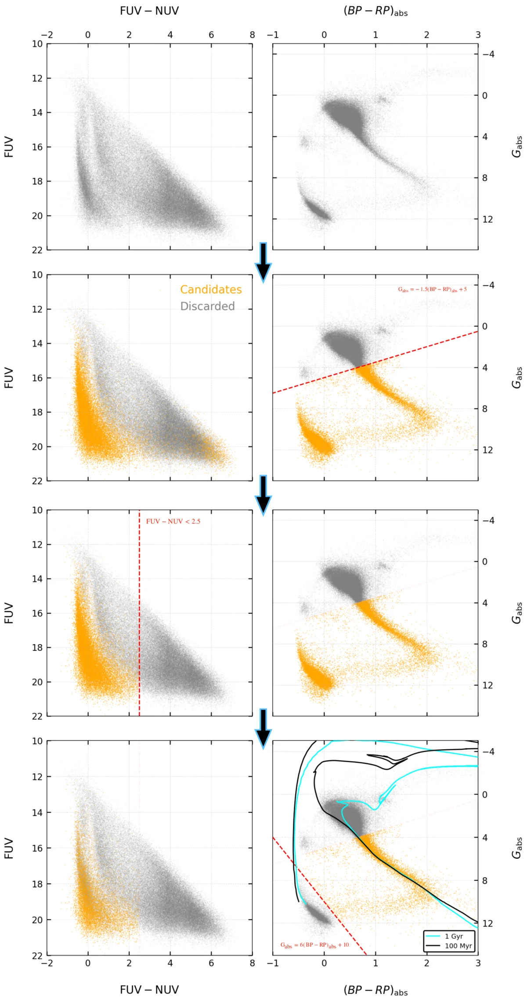
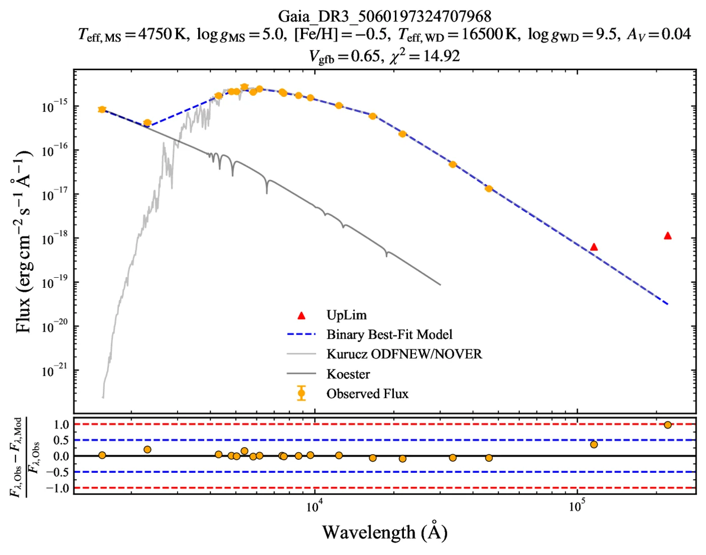
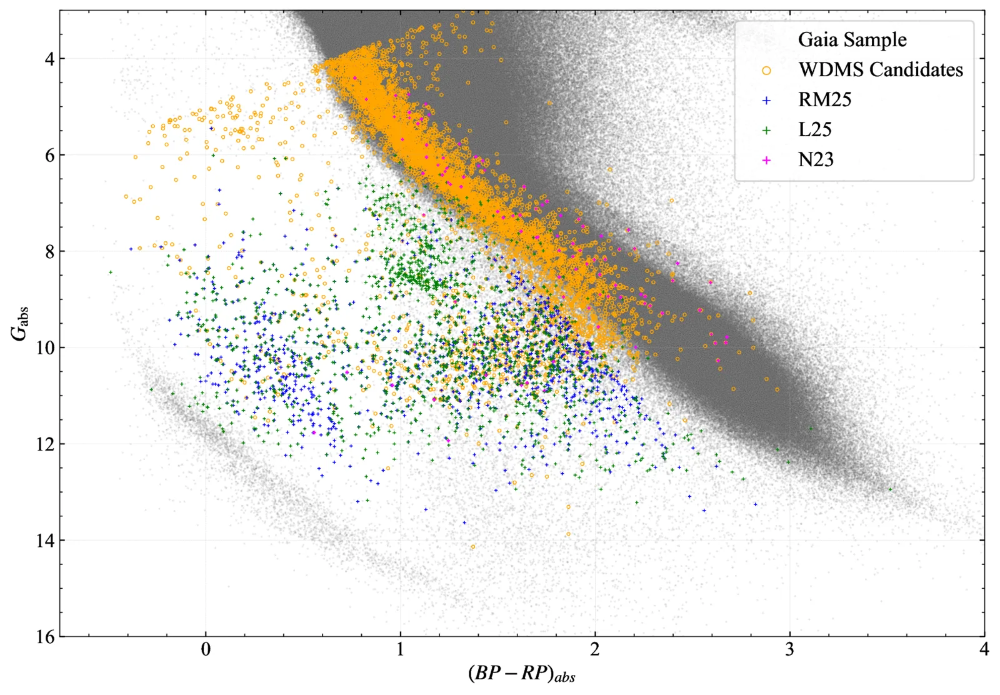

Research
Finding white dwarfs hidden on the main sequence
The full story behind the catalog: how 133,731 stars became 5,468 binaries, the two problems I had to solve, and what the sample shows so far. The short version, with an interactive explorer, is on the home page.
From 133,731 stars to 5,468 binaries
- 133,731quality-filtered sources that appear in both GALEX GR6+7 and Gaia DR3
- 8,939candidates left after three colour–magnitude cuts, one ultraviolet and two optical
- 6,666show an excess of more than 3σ in both the far- and near-ultraviolet bands
- 5,468have an acceptable two-component SED fit, giving temperature, luminosity and radius for both stars
- 5,099of those are new: they appear in none of the six earlier catalogs I compared against
Two problems I had to solve
- Selection cuts built from the data. Standard selection criteria were excluding viable candidates in this dataset. Rather than relying on clustering filters, I set the cuts by studying where the stars actually fall in the colour–magnitude diagrams, which gave a more complete and more robust sample.
- Fitting without a known metallicity. VOSA, the standard fitting tool, could not handle the missing metallicities. I split the fit in two: first constrain the metallicity from models of the main sequence companion, then use it as a prior when fitting both stars together.
Both taught me that a solution often needs a closer look at the physics rather than more code, and that a result is only as good as one's understanding of the data's systematics.


Enlarge

Enlarge

EnlargeWhat the catalog shows so far
- White dwarf masses for 3,213 systems, from 0.2 to 1.3 M☉, found by interpolating cooling tracks.
- 306 possible extremely low-mass white dwarfs (below about 0.3 M☉). I treat these as targets for spectroscopic follow-up, not confirmed detections.
- A magnitude-limited sample. Almost every system lies beyond 100 pc and well over half beyond 500 pc, so it reaches a population that 100 pc surveys can't.
- White dwarf temperatures agree with five independent catalogs below about 20,000 K, across three different measurement techniques.
Manuscript in preparation for The Astrophysical Journal. Abstract selected for a poster at ASI 2026.
Yenare, V., Chatterjee, S., Ganguly, A., Nayak, P. K. White Dwarf–Main Sequence Binaries Using Multi-band Photometry: Discovery and Characterisation.
The black holes of nature are the most perfect macroscopic objects there are in the universe: the only elements in their construction are our concepts of space and time.
Ring Nebula, a dying Sun-like star with a white dwarf at its centre. James Webb Space Telescope. Image: ESA/Webb, NASA, CSA, M. Barlow, N. Cox, R. Wesson (CC BY 4.0)